Process
Research and discovery
During a 2 week Design Sprint I worked with the client to deliver a low fidelity prototype of Poster Wall with which to
test and validate our ideas with real users.
Client Interview
The goal of the client meeting was to develop a clearer vision for Poster Wall and generate assumptions about the target
audience
Business Requirements
-
Allow customers to post about their own events off property
-
A forum dedicated to community support
-
Dialogue about One Fair Wage
Surveys
The client and I started off with an initial assumption that we were likely to find our target audience for a product of
this type, a social app tailored for a particular local hangout, in the regular crowd of guests. I targeted regular
guests in my surveys to gather demographic information and paint a picture of the target audience
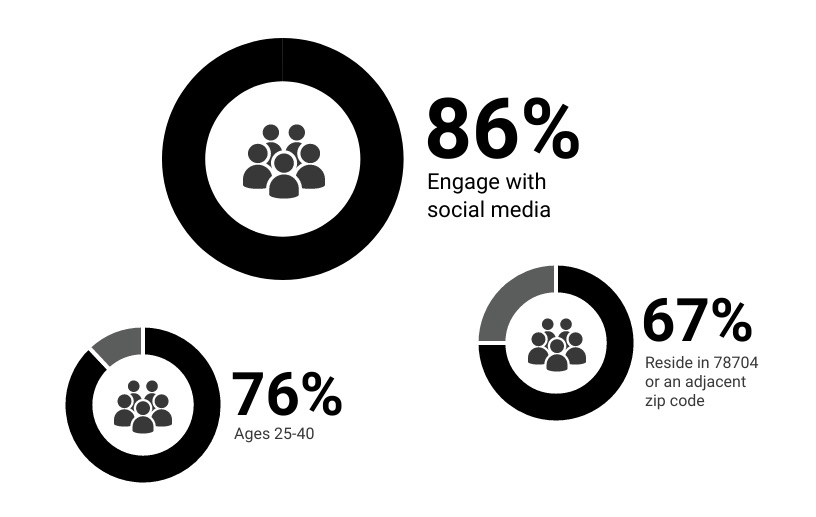
Target Audience Profile
-
Values: Artistic expression, community, connection, respect
-
Habits: Highly social, regular customers
-
Age: 20-40
-
Income: $21k-$100k
-
Occupation: Service, business and sales
-
Challenges: Little access to direct brand information
-
Preferred Channels: iOS device
-
Social Media: Instagram, Facebook, Reddit
Focus Groups
I had the privilege of reaching out directly to survey participants and facilitating two small focus groups in my
community.
I wanted to gain insights into their views and experiences with social media, and to answer a key question:
What were their hesitations about the product we were trying to build?
-
Social Media Motivations:
-
Like minded connections
-
Interactions with local community
-
Discovery of inspiration and other creators
-
Social Media Pain Points:
-
Performative, narcissistic socialization
-
Mistrust in information
-
Distracting and addicting
-
Discourse devloves to toxic arguments
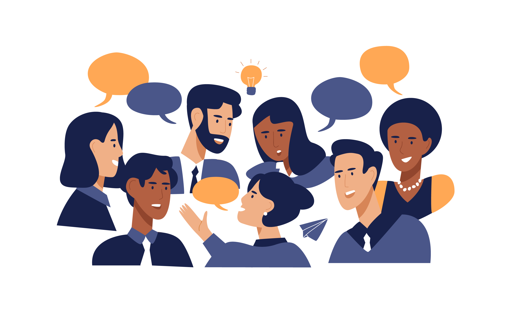
Competitor Review
I wanted to understand the pain points of users of similar apps. I conducted a competitor review of the Next Door App
Our user base expressed a primary concern during focus groups:
“Won’t your app just create division in the community?” - Sean
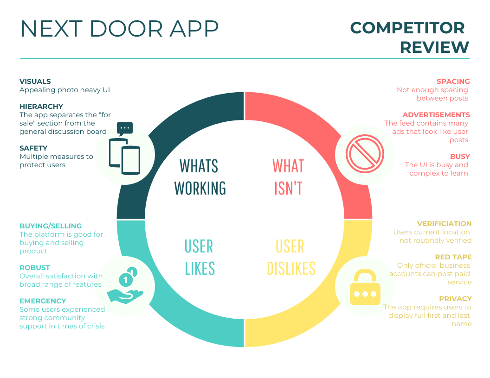
Our users aren’t wrong to hesitate. During my evaluation of Apple Reviews for Next Door I found that their users
encountered that very form of toxic communication that gave our users pause. People came to next door to connect with
their communities but found it was “Too much like any other social networking app”
A Main Challenge
After compiling research I was able to zero in on a main challenge based on:
-
Dislikes identified in competitor reviews
-
User concern expressed in focus groups
-
Client desire to stay true to brand values
The challenge was to cultivate an online space that truly reflects the heart of Bouldin Creek Cafe.
But what does Bouldin represent to the users? Aren’t we building this for them?
I decided to ask them, this is what they said:
“Reminds me of home” - Sean
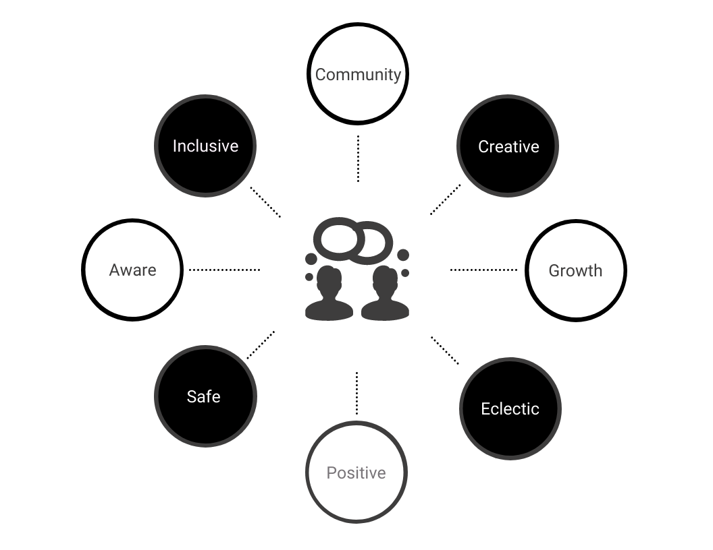
Picking a Target
Based on business requirements I was able to define 3 areas to target in the app
-
Protecting the users from harassment
-
Allowing users to create a broad range of community posts
-
Opening a dialogue about One Fair Wage
I identified the 4th target through research. There are so many pitfalls of social media that can ruin an app like this.
I wanted to know, how can we extract the good of social media?
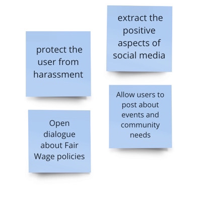
Personas
I evaluated user psychographics against the universal archetypes and I identified three main archetypes that represent
our user base for poster wall
I developed personas out of these archetypes to work with during experience mapping.
Shelly
27, Female
Occupation: Artist
Location: Austin, TX
Archetype: The Artist
Creative • Fun • Compassionate • Semi-technical
Goal | Interests
-
Connect and sell her art
-
Platforms that are more localized
-
Connect with other vegans, stay in the know about new specials
-
Use apps to connect with creators
Behaviors
-
Showcases her art on various platforms
-
Takes life at a slow pace and enjoys it that way
-
Die hard pedestrian, loves to walk everywhere
-
Avid and passionate vegan
Pain Points | Frustrations
-
Finds social media distracting and deals with harassment
-
Often doesn’t know about events until after
-
Difficulty finding collaborators in her neighborhood
-
Privacy concerns with social media
Motivations
-
Socialize with like minded people
-
Convenience of meeting people in her neighborhood
-
Access to information including specials
-
Finding ways to be involved with a local business
Cory
37, Male
Occupation: Investor
Location: Austin, TX
Archetype: The Explorer
Analytical • Loud • Efficient • Technical
Goal | Interests
-
Unplug while still maintaining his
career
-
Community to help facilitate work/life balance
-
Working on staying in good health
-
Finding positive minded people
Behaviors
-
Makes his own hours and works a high tension job
-
Loves to connect with strangers
-
Seeks new connection on social media
-
Sometimes obnoxious, always eager
Pain Points | Frustrations
-
Social media can be fake and toxic
-
Scattered lifestyle can be very isolating
-
Needs help meeting people
-
Comes on strong, sometimes gets overwhelmed
Motivations
-
Unwind after work by meeting people
-
Know about new drink specials when they come out
-
Improve diet with vegetarian and vegan food
-
Occasionally find networking events
Experience Mapping
I wanted to get into the heads of my users during the steps they would take through our app to achieve their goals
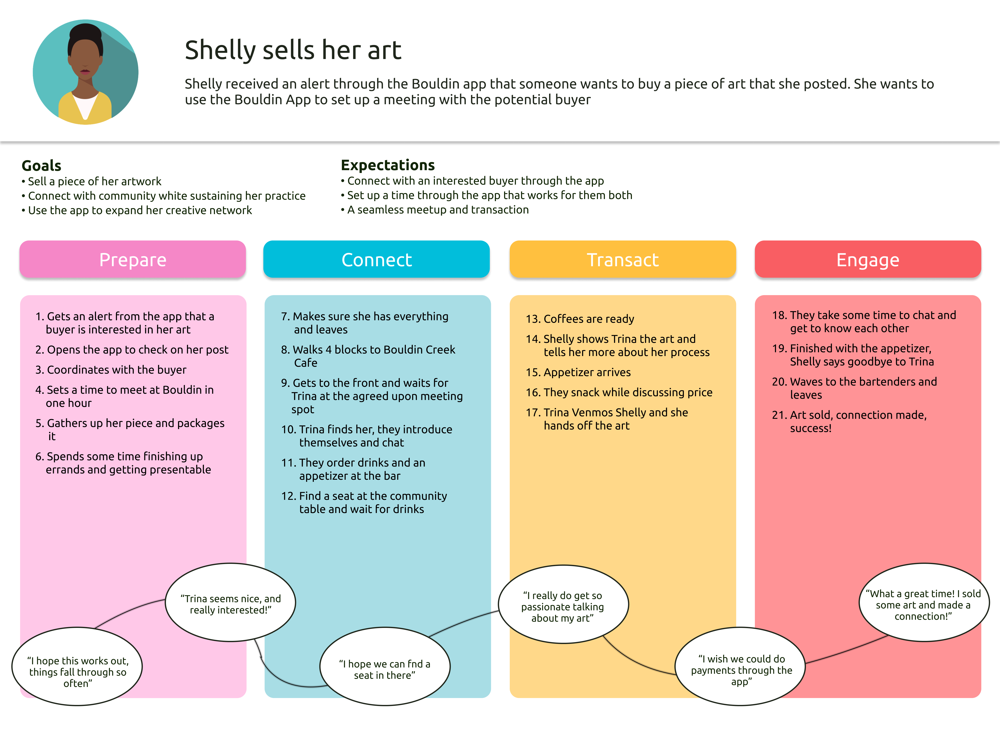
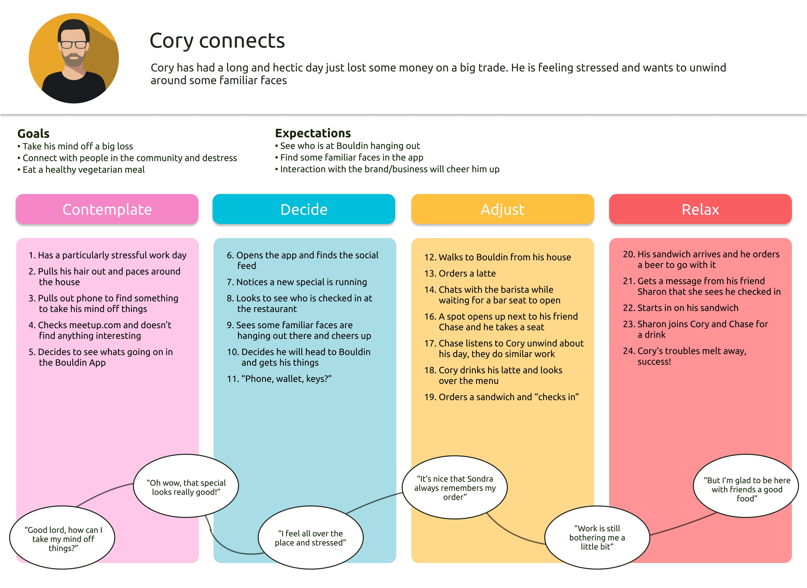
What did I learn from journey mapping and empathy mapping?
Our core group of users are bonded by a sharing of common values, but their daily lives and needs are so different.
How do we build an app that gracefully meets their unique sets of needs?
Information Architecture
User Stories and User Flows
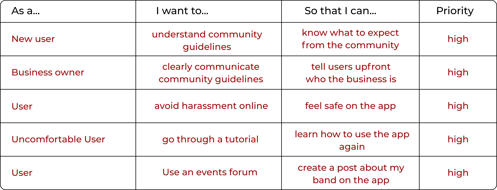

Site Map
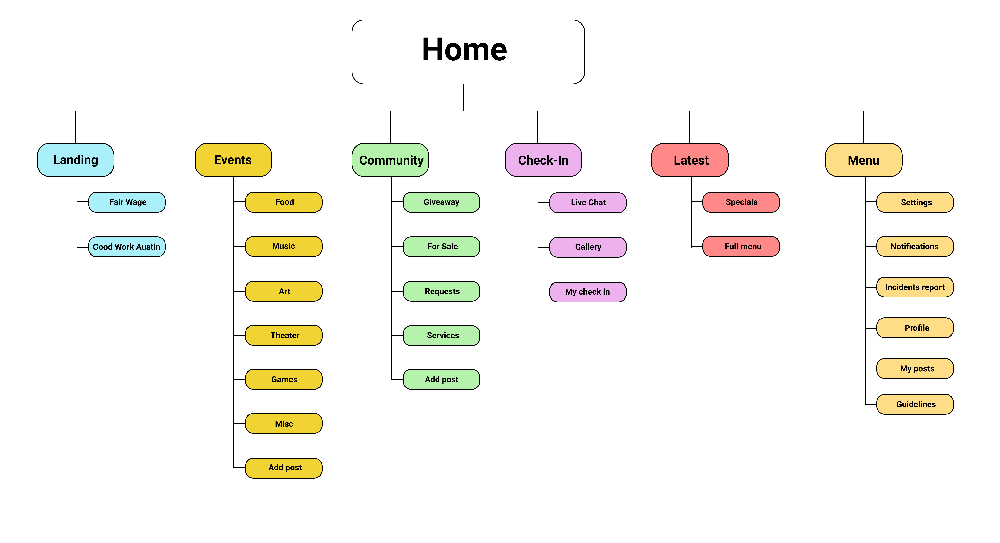
Ideas and Solutions
Once I had a grasp of how I wanted to organize the content of our app I took pencil to paper and started
working out
some different ideas for how the concept could come to life through design.
Sketching
Paper Prototyping
I used paper prototyping to quickly test an idea for incorporating a rewards system.
I didn’t pursue this path as this early testing showed me that this feature would require more attention and research
than allotted for in the sprint cycle
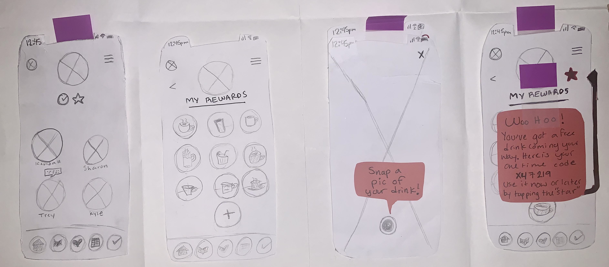
Privacy Solutions
-
No private messaging on the app
-
Community guidelines with a quiz
-
API integration for AI moderation
-
Required photo to gain access to app
-
Full owner control over public content
Wireframes and Prototyping
I would do things differently next time at this point in my process and put in more effort to drive contact with the
client. I hadn’t been able to coordinate a client meeting yet for follow up, so I focused on business requirements, user
feedback, and contact with professionals to guide my process at this point.
After drafting initial wireframes of my chosen sketches I asked my mentor on the Thinkful team to walk me through a
heuristic evaluation of my design.
So what changed?

Improvements Made
-
Stronger informational hierarchy
-
More clear and consistent labeling of CTA’s and navigation
-
Progress bars added to all processes
-
Left justified content for post creation
-
Better consistency across screens

Accessibility
As a green designer, accessibility is one of the hardest concepts to wrap my head around. For this project I studied the
WCAG and looked for ways to incorporate accessbility into my design for Poster Wall
Usability Testing
So after all this, what next?
After updating my designs I put together a usability session guide including script and task analysis outline.
I recruited participants and spent the next two days testing out my designs with four more users.
Participants
-
Ixchel - 28, Research Coordinator
-
Leah - 28, Barista
-
Victoria - 55, Midwife
-
Will - 40, VC
Tasks Tested
-
Onboarding
-
Locating an event post
-
Creating an event post
-
Reporting an incident to the owner
-
Locating the check-in forum
The data
I captured feedback by timing and calculating error rates for high priority tasks.
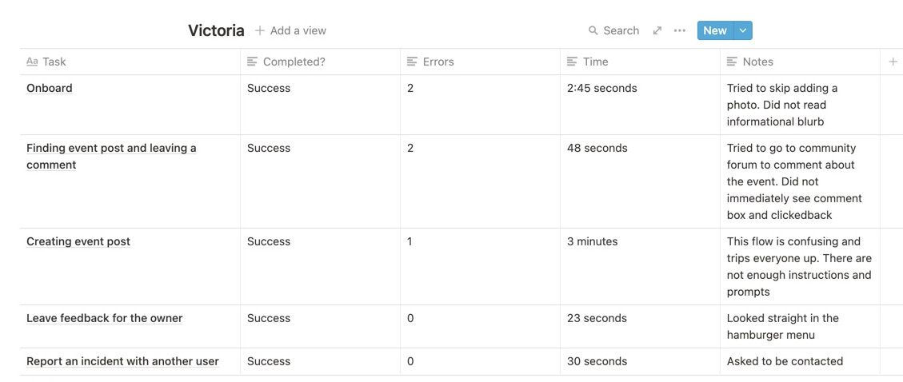
Findings - The Good
I also asked qualitative questions about how users felt about the app and how they would describe it. Here’s what I
discovered:
Overall users enjoyed the intuitive design and were able to navigate the app with ease
“It’s a Frogs Life! I love it!!” - Leah
“Once you figure out one thing, the rest of it makes sense” - Ixchel
Sweet, but what didn't they like?
Users were off put by the requirement to add a photo of themselves during onboarding. Participants were also unanimously
underwhelmed with the live chat and wanted something more engaging.
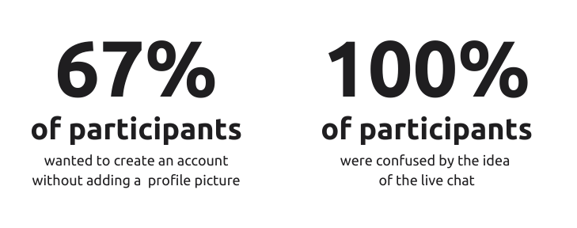
Any more good news?
I'm glad you asked.
I supplemented my moderated usability testing with first click tests. I used optimal workshop to generate heat maps
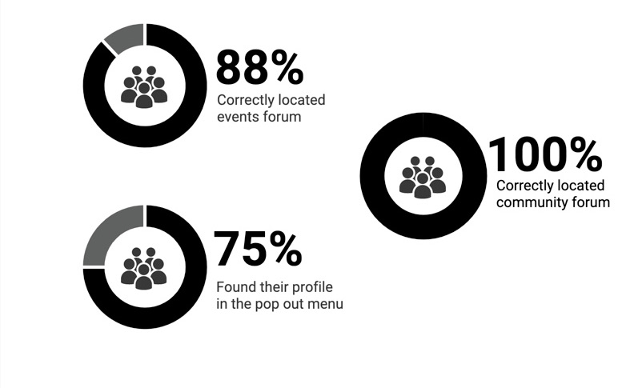
Client Review
After usability testing I brought my design and testing results into a discussion with the client to review the work I
had done so far.
Likes, Dislikes, Revisions
-
Approved the events, community, and check-in’s screens
-
Wanted One Fair Wage information to be found on the homepage
-
Didn’t want private general feedback from users coming directly to her
-
Didn’t want private general feedback from users coming directly to her
Key Changes
I quickly sketched and drew up wireframes of a new homepage that focused more on One Fair Wage at the clients request. I
was able to conduct some impromptu guerilla usability tests to test the new layout.
I moved the content of the original home page into a “latest” feed where users can find the specials and all things
Bouldin, including links to the full menu and the external website where users can order food.
Conclusions
Recommendations
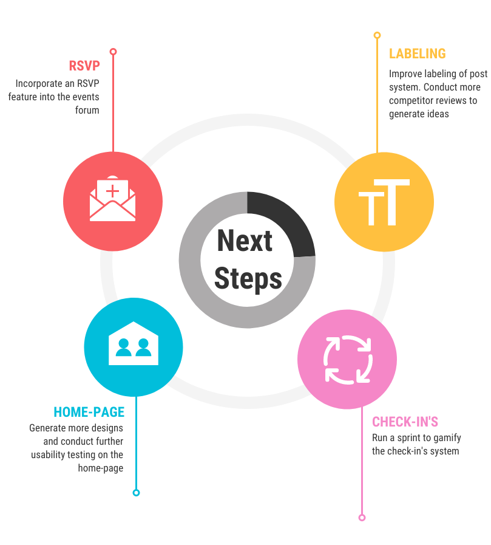
In a design sprint retrospective I took inventory of my process and offered recommendations for next steps.
-
Design an RSVP feature for events
-
One week sprint to gamify the Check-ins system
-
Generate more design ideas for the home page to test with users
-
Re-evaluate the flow of creating posts in the appRe-evaluate the flow of creating posts in the app
Learnings
This design exercise taught me an abundance of valuable lessons.
so What did I learn?
-
Share earlier and more often - I would spend more time with my client!
-
More in-depth client interviews - I would ask more questions!
-
Narrower scope - I would tackle a much smaller project next time as a new designer
As a student designer, this project taught me how to navigate a new design process. The sprint was able to reveal the
gaps in my process and the areas in which I need to improve.
I also discovered the joy of conducting research in my own community. I enjoyed the opportunity to find new ways to
contribute to and hopefully give back to an environment that has helped nurture my own growth.
This project showed me how truly rewarding UX work can be when designing solutions for those who share the space that
you call home.